Uitleg over de video:
Op deze pagina laat ik zien hoe je verschillende patronen kunt maken en ik heb een paar voorbeelden van patronen. Dit is een linkje naar een video waarin uitgelegd wordt hoe je een simpel patroon kunt volgen en maken. Ik vind dit een goede video voor als je niet goed begrijpt hoe je een patroon moet volgen, maar als je het wel begrijpt en het snel kan oppakken, raad ik de video hieronder aan. In de video van het linkje wordt het volgen van patronen heel erg rustig uitgelegd.
Verschillende patronen:
Hieronder staan een paar voorbeelden van patronen. Er staan nog heel veel andere patronen op Pinterest. Aan de bovenkant van de plaatjes zie je hoe de armbandjes er uiteindelijk uitkomen te zien. Je kunt natuurlijk ook andere kleuren gebruiken dan de patronen. Ik vind de patronen hieronder moeilijk, maar het is wel een leuke uitdaging. De patronen in de filmpjes vind ik makelijker en handiger om mee te beginnen.
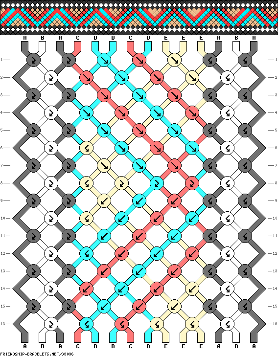 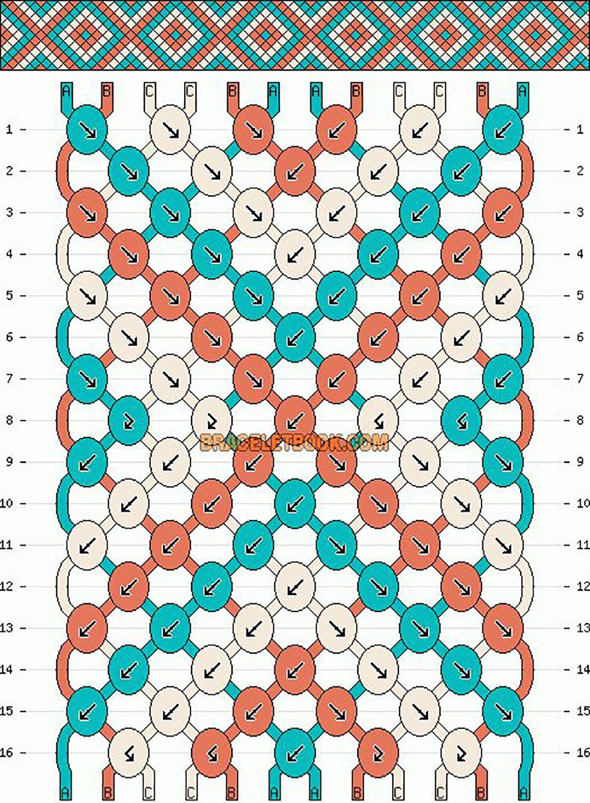 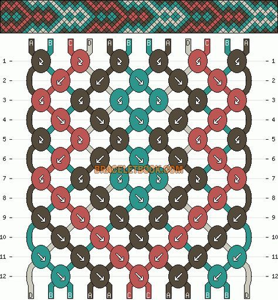 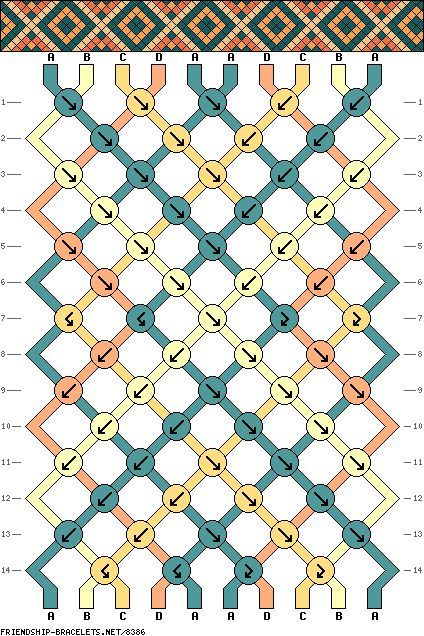
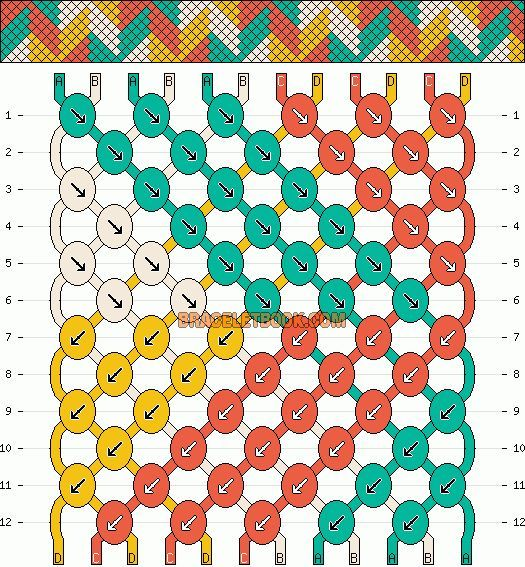
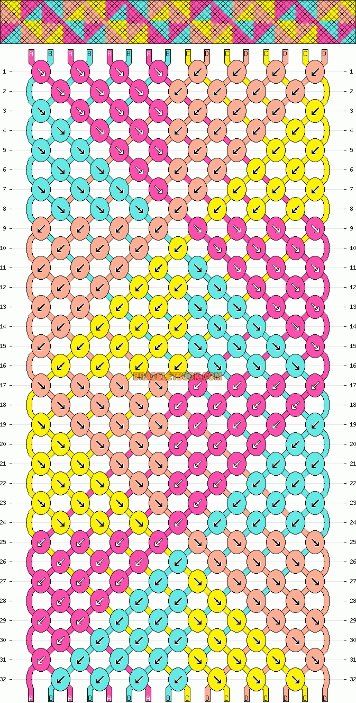
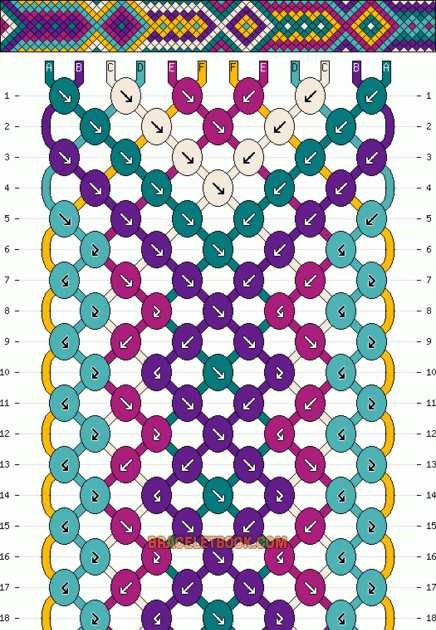
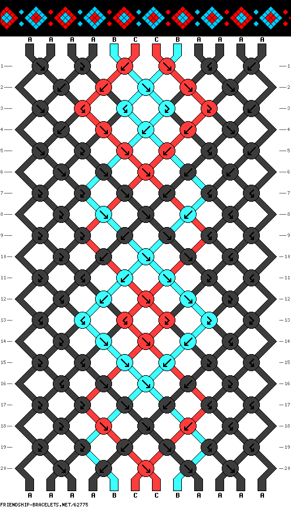
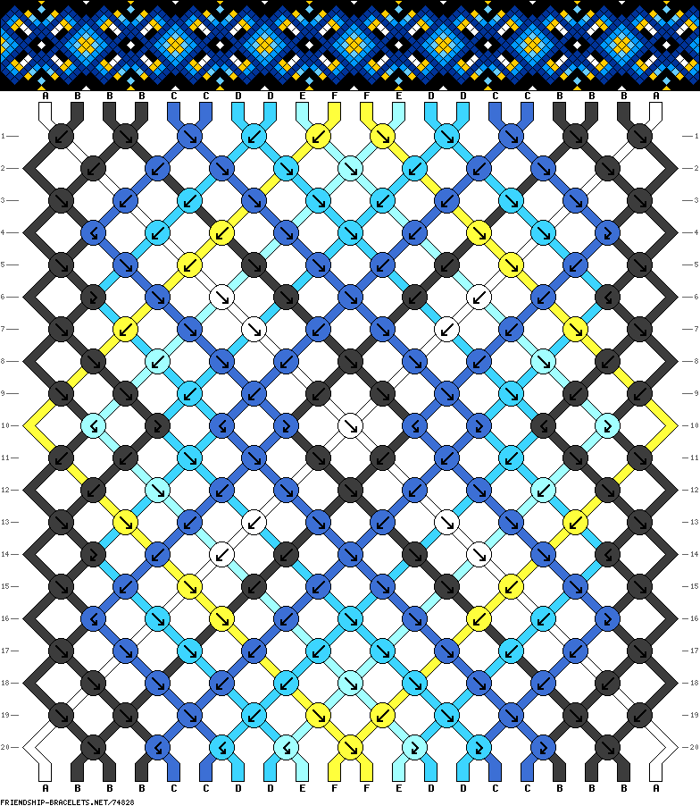
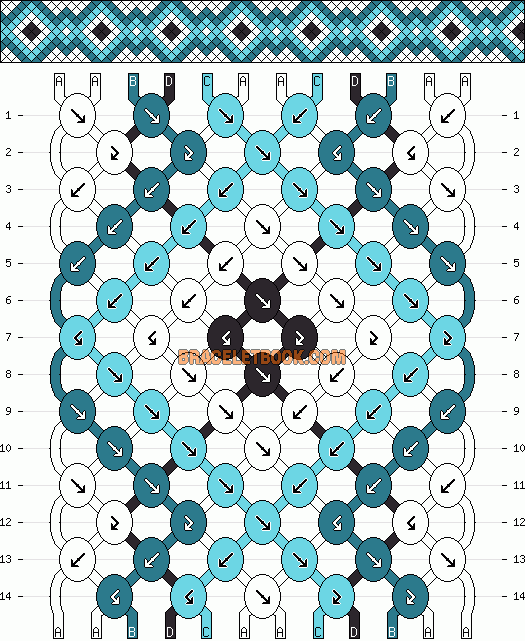
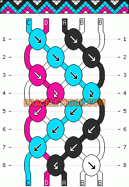
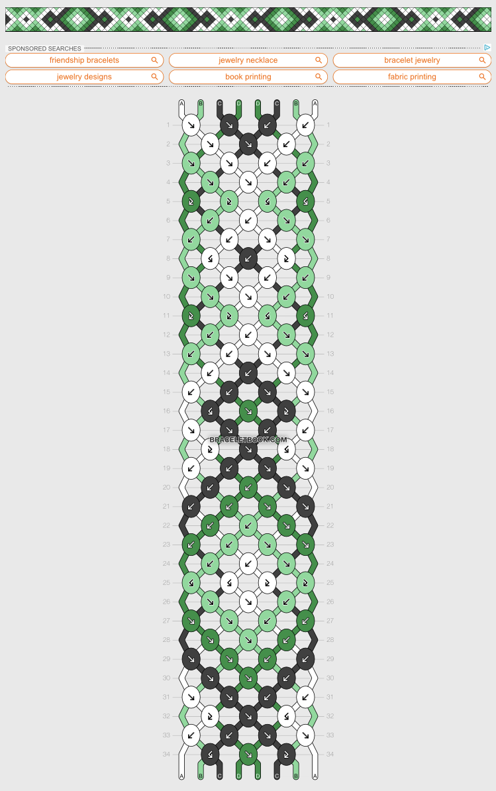
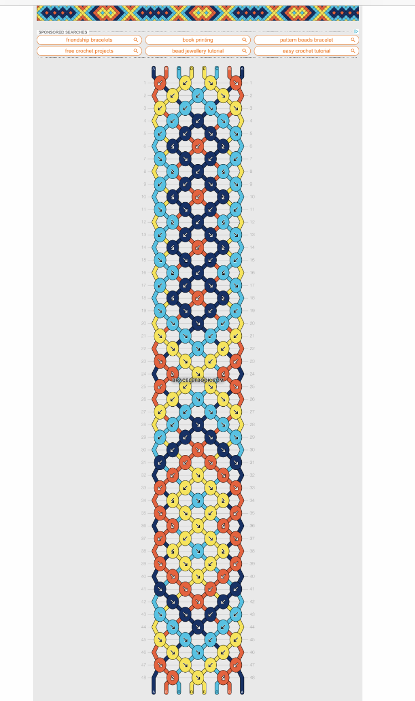
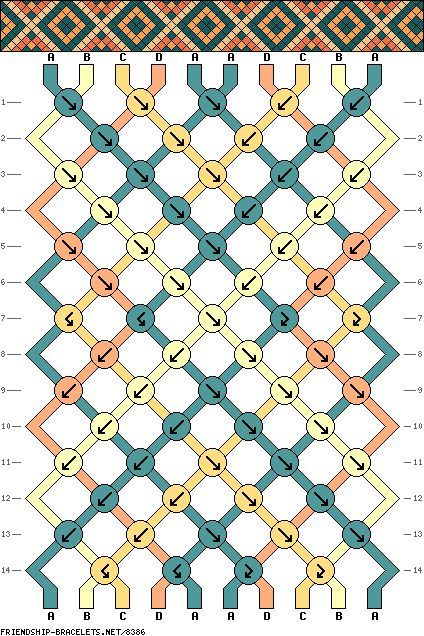
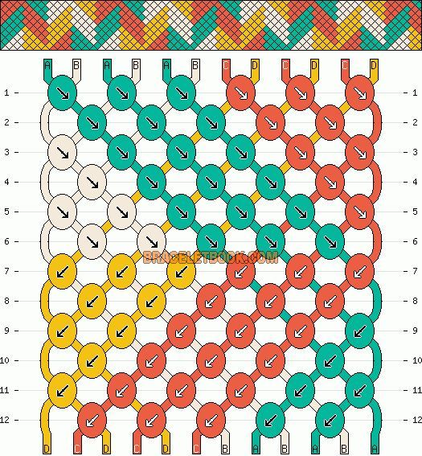
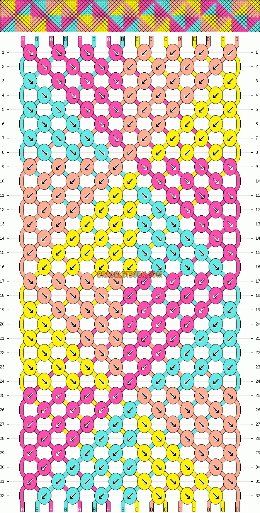
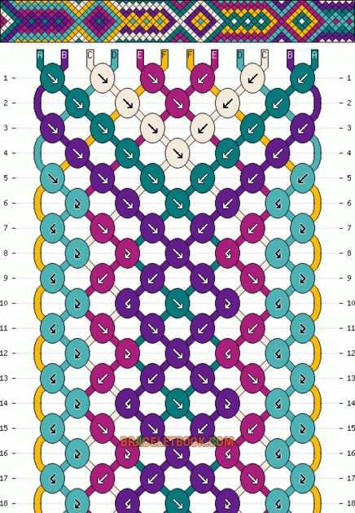
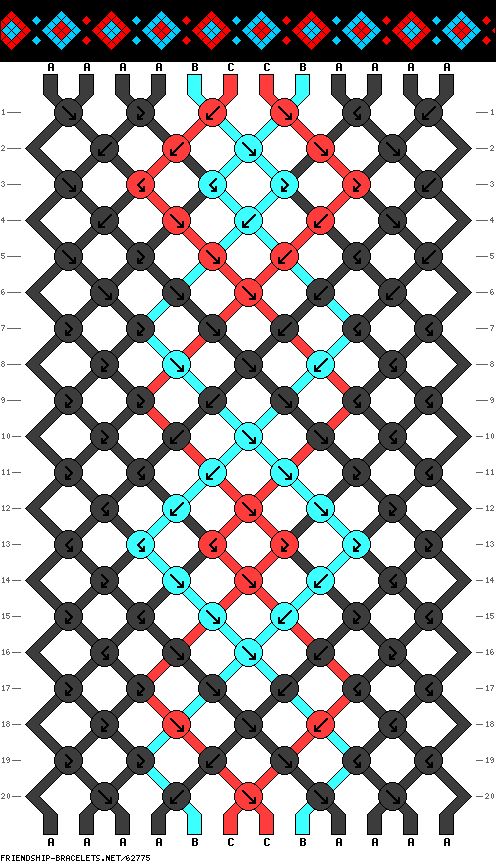
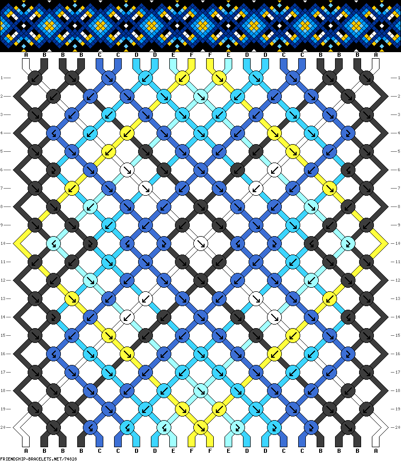
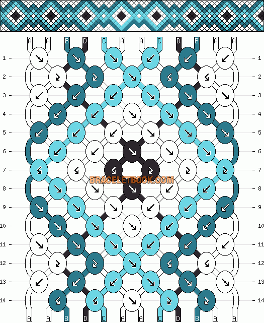
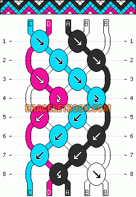
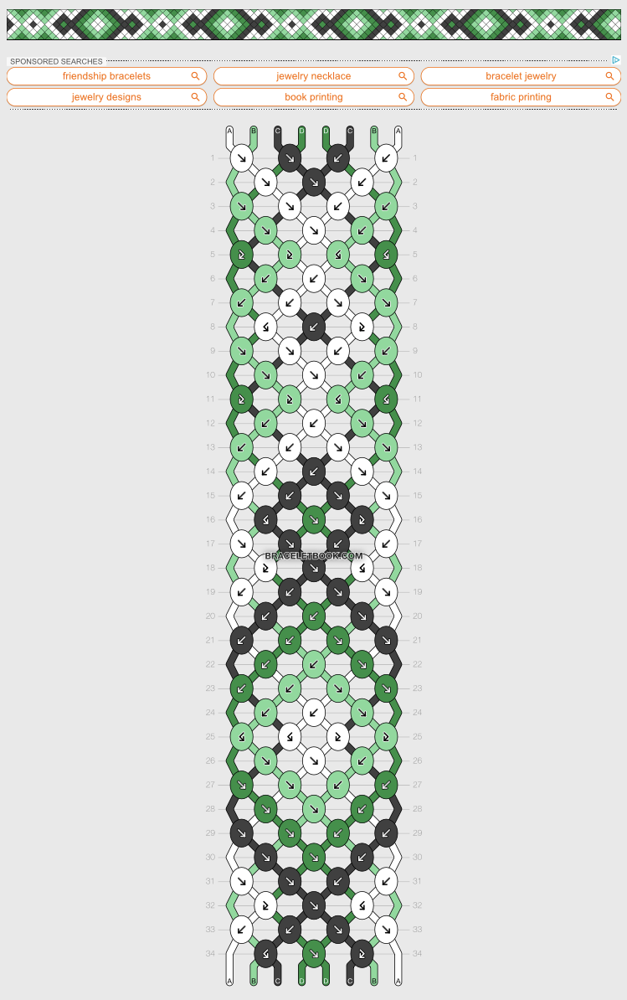
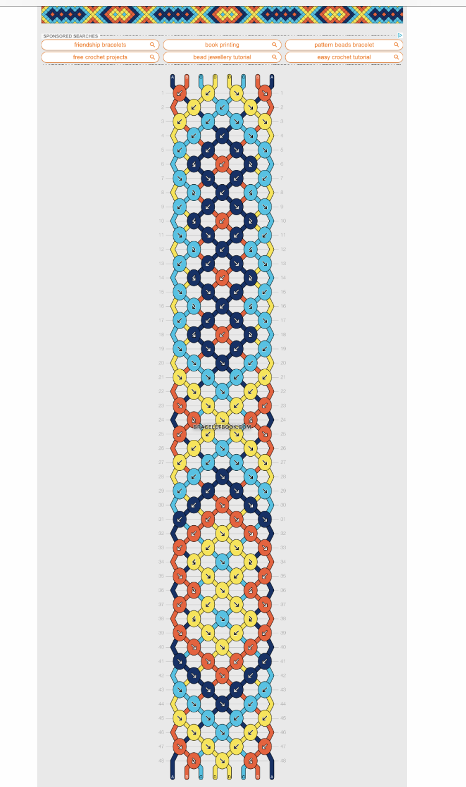